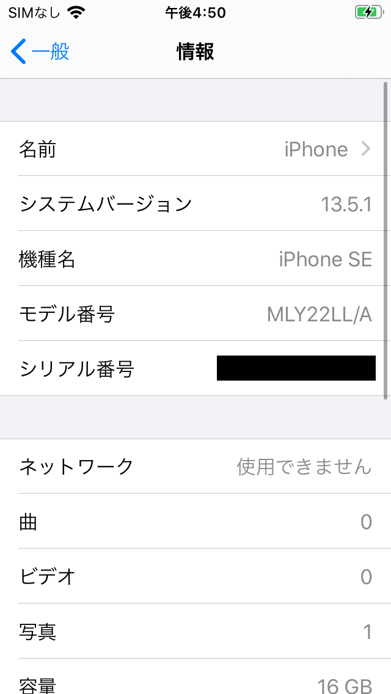
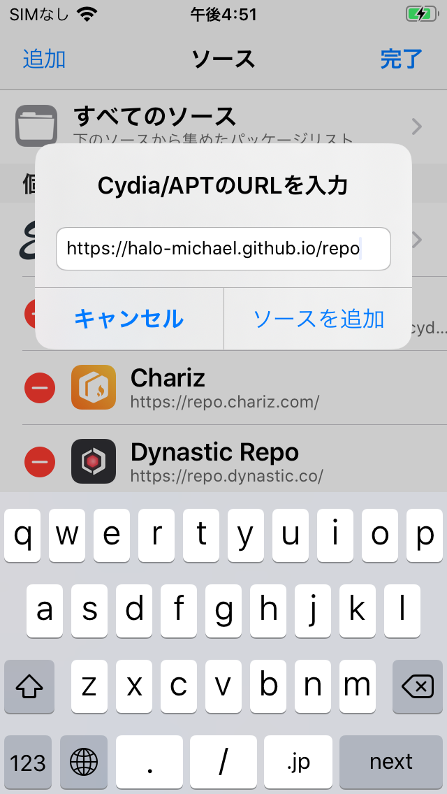
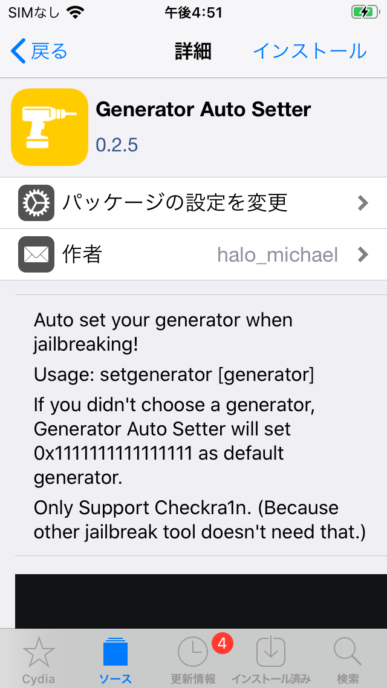
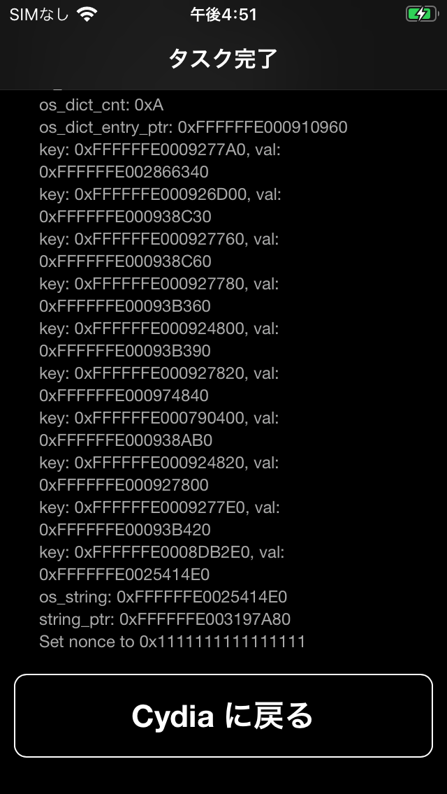
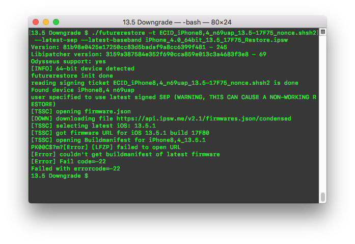
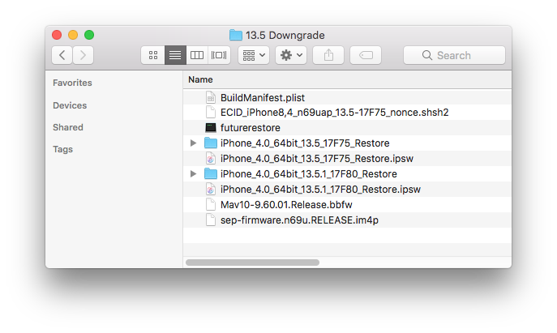
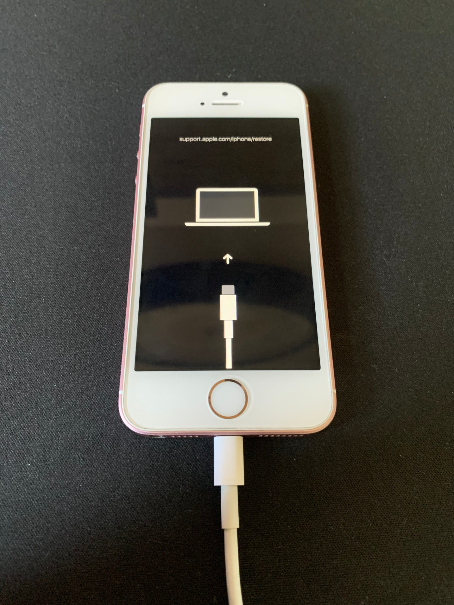
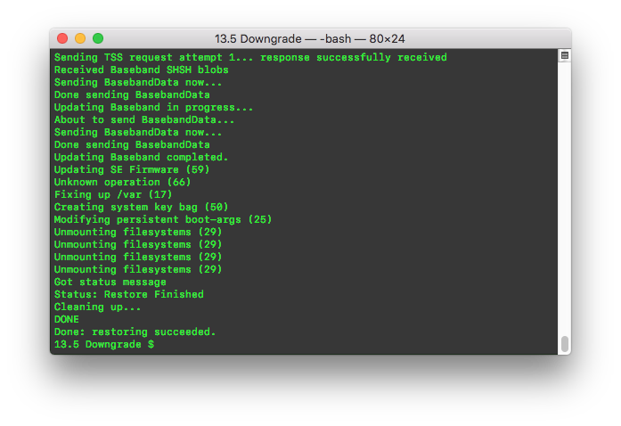
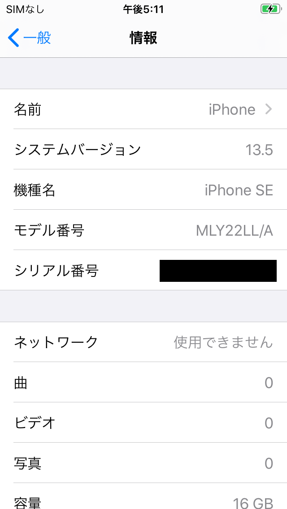

Downgrading from 13.5.1+ back to 13.5 with shsh2 blobs
Imported: 2026年9月22日
Before beginning, this is a reminder that this is not a method of downgrading without shsh2 blobs. If you missed the signing of the 13.5 and never saved blobs, then you're out of luck. This method also does not work on devices not vulnerable to the checkm8 bootrom exploit. The oldest phone this method supports is the iPhone 6S, and the latest phone this method supports is the iPhone X. Any device above the iPhone XS is not vulnerable to this exploit.
The device I will be using to demonstrate this downgrade is the iPhone SE. I have shsh2 blobs saved for 13.5, and the device is running 13.5.1 freshly restored using iTunes.

This downgrade is essentially useless for those who prefer to use checkra1n to jailbreak their devices, but I prefer unc0ver, so that's why I'm covering it.
This guide is written for those who are on 13.5.1, but this can be replicated for those who want to update to 13.5 from 13.4.1 or any version below. The steps are essentially the same, but setting the nonce may vary depending on whether you are using unc0ver/chimera or checkra1n. I'll be using the Generator Auto Setter by Halo Michael as it makes setting the nonce of checkra1n devices quick.
After jailbreaking with checkra1n, open Cydia and install the following repo: "https://halo-michael.github.io/repo"

Navigate into the repository and locate "Generator Auto Setter" and install the tweak.

By default, the nonce that tsssaver from 1conan uses to save shsh blobs is 0x1111111111111111. Generator Auto Setter defaults to this generator when you install it.

If your shsh blobs use a different nonce, you can install your preferred Terminal app for iOS and run the setgenerator command with the nonce found in your shsh2 blob.
Once the generator is set, you can move to your computer. The computer I will be using is a MacBook Pro running macOS 10.13.6, but this works on Windows.
The files that are required are the 13.5 IPSW for your device, the shsh2 blob for 13.5, and s0uthwest's fork of futurerestore (rest in peace, s0uthwes).
The command I initially ran was
./futurerestore -t ECID_iPhone8,4_n69uap_13.5-17F75_nonce.shsh2 -d --latest-sep --latest-baseband iPhone_4.0_64bit_13.5_17F75_Restore.ipsw
but I kept encountering errors with locating the BuildManifest of the latest firmware in futurerestore.

I had to resort to downloading the 13.5.1 IPSW for my iPhone SE, and unzipping the BuildManifest.plist, Baseband firmware, and the sep firmware files.
The commands I used to extract those were:
unzip -j iPhone_4.0_64bit_13.5.1_17F80_Restore.ipsw BuildManifest.plist
unzip -j iPhone_4.0_64bit_13.5.1_17F80_Restore.ipsw Firmware/Mav10-9.60.01.Release.bbfw
unzip -j iPhone_4.0_64bit_13.5.1_17F80_Restore.ipsw Firmware/all_flash/sep-firmware.n69u.RELEASE.im4p
These commands are specific to my device, which is the n69u version of the iPhone SE (First Generation).

With all the files extracted, I moved to finalizing the restore with manually specifying the BuildManifest, sep, and Baseband. The command I ran was
./futurerestore -t ECID_iPhone8,4_n69uap_13.5-17F75_nonce.shsh2 -s sep-firmware.n69u.RELEASE.im4p -m BuildManifest.plist -b Mav10-9.60.01.Release.bbfw -p BuildManifest.plist iPhone_4.0_64bit_13.5_17F75_Restore.ipsw
Once futurerestore begins the downgrade, the device should enter recovery mode, and if the nonce generator was set properly, the device will boot into iBEC.

The restore takes a little bit of time, and should vary depending on the device you're downgrading.

Once futurerestore finishes, the device should reboot into the setup screen, and will have successfully downgraded to iOS 13.5.

13.5 is vulnerable to unc0ver, so with AltStore, you can install unc0ver and have the semi-untethered jailbreak, which I prefer over checkra1n.